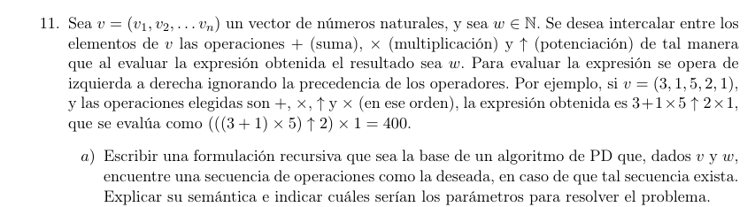
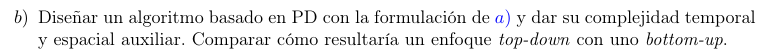

\[\text{ os}_{vw}(i,s) = \begin{cases} \lbrack\ \rbrack & \text{si }i = n \land s = w \\ \bot & \text{si }(i = n \land s \neq w) \vee (s > w) \\ \prec \begin{cases} \text{ os}_{vw}\left( i + 1,s + v_{i + 1} \right) & ⚬\lbrack + \rbrack \\ \text{ os}_{vw}\left( i + 1,s \cdot v_{i + 1} \right) & ⚬\lbrack \times \rbrack \\ \text{ os}_{vw}\left( i + 1,s^{v_{i + 1}} \right) & ⚬\lbrack \uparrow \rbrack \end{cases} & \text{sino } \end{cases}\]
Con \(\prec\) tal que devuelve cualquier lista diferente de \(\bot\)

f solve(v,w):
memo = matriz de n*w
f os(i,s):
si (i = n and s = w) or (s > w):
return None
si i = n and i = w:
return []
si memo[i][s] != None:
return memo[i][s]
//prec retorna cualquiera de los 3 si es distinto de None
memo[i][s] = prec(os(i+1,s+v[i+1])++[+],
os(i+1,s*v[i+1])++[x],
os(i+1,s^v[i+1])++[↑])
return memo[i][s]
solve(1,v[1])
Para cada k en 1...n:
Para cada par de nodos (i, j):
Actualizar caminos que usan k como intermedio:
c_pares = par[i][k] * par[k][j] + impar[i][k] * impar[k][j]
c_impares = par[i][k] * impar[k][j] + impar[i][k] * par[k][j]
par[i][j] += c_pares
impar[i][j] += c_impares